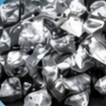
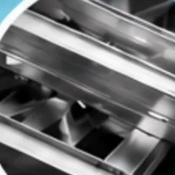
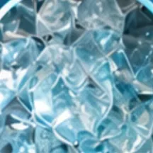
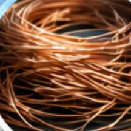
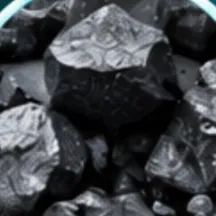
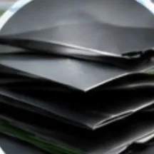

Étape 01
Collecte des panneaux solaires démontés, via SENS eRecycling et les installateurs.
Étape 02
Les panneaux solaires encore performants partent en upcycling pour une nouvelle vie. Le reste est recyclé.
Étape 03
Séparation mécanique du verre, de l'aluminium, du cuivre et des polymères.
Étape 04
Valorisation et remise en circulation des matériaux.
Le constat
Les panneaux solaires anciens ou endommagés sont collectés, puis expédiés à l'étranger : la Suisse ne dispose d'aucune installation dédiée. Ce transport émet du CO₂ ; traiter les panneaux solaires en Suisse améliore leur bilan de cycle de vie. La traçabilité se perd aussi en route, et une partie de la matière n'est jamais valorisée.
Nous traitons ces panneaux localement et de manière responsable. Un panneau solaire n'est pas un déchet : c'est du verre, de l'aluminium, du silicium, du cuivre et quelques grammes d'argent. Conserver un panneau encore performant au lieu de le broyer permet de maximiser son bénéfice environnemental grâce au réemploi. Il peut ainsi être remis en service pour renforcer l'économie circulaire.
Nos trois piliers
01
Les panneaux solaires les plus performants et intacts sont dirigés vers l'upcycling et repartent comme éléments intégrés au bâti (BIPV). Une seconde vie, sans nouvelle production.
02
Les panneaux cassés, anciens ou défectueux sont séparés en verre, aluminium, cuivre, polymères, câbles et électronique. Plus de 93 % de la matière est réutilisée.
03
Nous développons notre propre procédé à faibles émissions de CO₂ pour séparer l'argent du silicium. Il génère une production locale d'argent de haute qualité, au service de l'écosystème régional tel que l'horlogerie et la microélectronique.

Argent
Récupération et raffinage en Suisse

Aluminium
Recyclage des cadres et structures

Verre
Recyclage en nouveaux matériaux

Cuivre
Valorisation des câbles et connexions

Silicium
Réutilisation dans de nouvelles cellules solaires

Plastiques
Transformation en nouvelles applications
Revaloriser les ressources d'aujourd'hui pour une énergie plus verte demain.
Le panneau solaire, couche par couche
À propos
Solar Loop est une entreprise fondée par deux ingénieurs issus de l'industrie photovoltaïque suisse.
Nous accompagnons les installateurs et les exploitants dans leurs projets de repowering : reprise des panneaux solaires démontés, tri, remise en service ou valorisation, et un rapport par chantier indiquant ce qui a été réutilisé.
Fondateurs
Dr Benjamin Strahm
Plus de 20 ans dans l'industrie photovoltaïque : CTO et co-fondateur de MCPV, responsable R&D chez Roth & Rau puis Meyer Burger. Doctorat en physique des plasmas et Master en science des matériaux de l'EPFL.
Dr Thomas Söderström
Fondateur de Ström SA et de Climacy SA, ancien responsable R&D chez Meyer Burger. Doctorat en microtechnique de l'Université de Neuchâtel, Master SIA de l'EPFL et EMBA de l'Université de Saint-Gall.
Contact
Type de panneaux solaires, nombre, année d'installation et localisation suffisent pour une première évaluation. Nous répondons avec un plan de tri et une estimation de la valorisation.